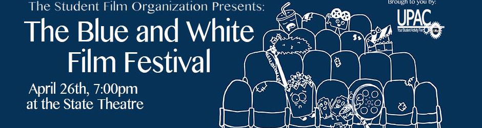

The Blue and White Film Festival is the biggest event of the year that SFO holds. Usually at the end of April, the festival is a showcase of all the talent the student film community here at Penn State has to offer. Students from the film major and outside the film major submit their works from the year. Each film is then uploaded to a confidential server and judged by a panel of Penn State affiliated faculty and alumni. While SFO has no hand in the judging process, the officers are in charge of every other aspect of the festival, from the submission guidelines to the refreshments. At the end of judging, the winning films are shown at the State Theater to celebrate the filmmakers' achievements.
Blue & White 2016
Blue and White 2016 will be taking place Sunday, April 24th at 7 PM at the State Theater in downtown State College.
Students who wish to submit their film in the festival can find the guidelines and submission form below. For the first time this year, SFO is also holding a screenwriting competition, sponsored by Final Draft, alongside the usual film competition. The guidelines and form for the screenwriting portion are also provided below. Instructions on how to upload a film/script to the festival server are included.
The 2015 Blue and White Film Festival took place Saturday, April 25th at the State Theater. Featured films included "Date Night", "Donkeymentary", "Treetops", "Business as Usual", "Clearing the Gate", "Finding Color", "Until Death", "Protect and Serve", "Devil's Whisper", "Finding the Rhythm", "A Silent Struggle", "We Are Not Alone", "Trepidation", "Scars", "Draw", "Chaning Channels: Monica the Medium", "Abstract", "Teachers, Tech, and Time", "Farts", and "Carrie Hope".
Blue & White 2014

The 2014 Blue and White Film Festival took place Saturday, April 26th at the State Theater. Featured films included "Loop", "Scarcity", "What's in Your Bottle?", "Fallout", "New Beginnings", "Winter", "A Day Detached", "A Tale of Two Groundhogs", "The Night Shift", "Straight Talk", "Eat.Flay.Blood...", "Flight in Color", "What Lies Beneath the Truth", "Take a Walk", "Real Men Have Guns", "Off the Rocks", and Extropium".
Blue & White 2013
The 2013 Blue and White Film Festival took place Thursday, April 25th at the State Theater. Featured films included "Catharsis", "Restart", "Siblings", "Crash and Burn", "Sisters", "Pedlar", "Legends of the Valley", "Older Than This Year's Cutting", "Proper Steps", "On a Cloudless Day", "Synapse", "Bear'd Up", "Talitha", "Perchance to Dream", and "Chester".